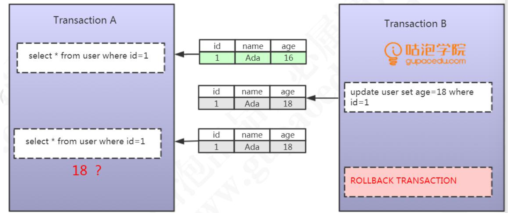
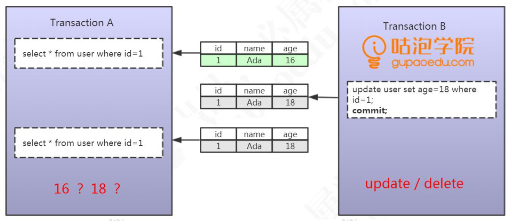
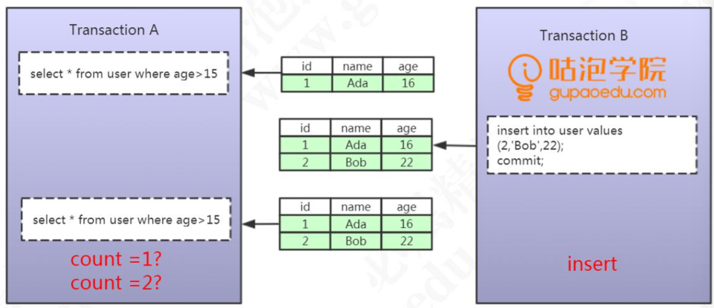
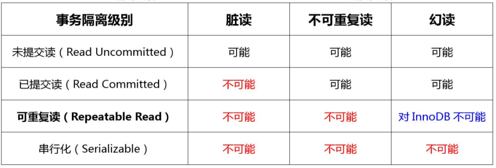
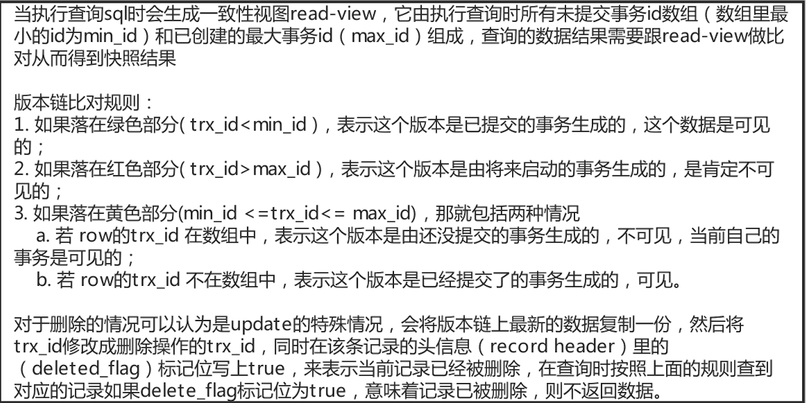
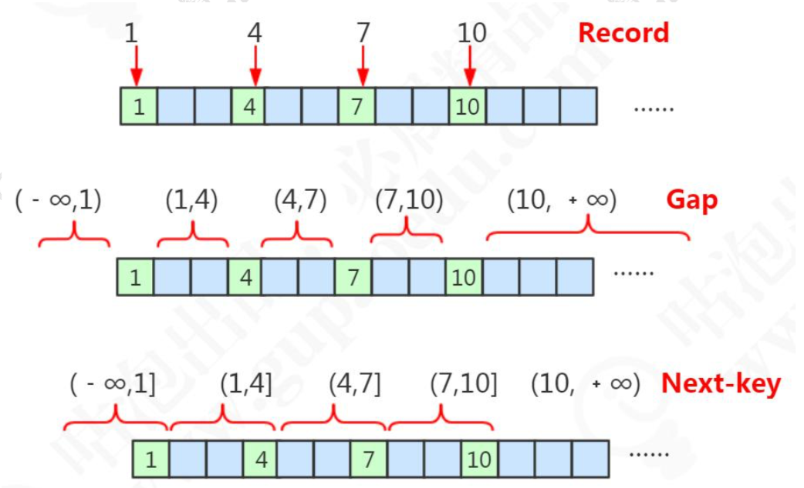

MySql事务
事务特性
事务的四大特性:ACID。
第一个，原子性，Atomicity。数据库的一系列操作，要么都是成功，要么都是失败，不可能出现部分成功或者部分失败的情况。原子性，在 InnoDB 里面是通过 undo log 来实现的，它记录了数据修改之前的值(逻 辑日志)，一旦发生异常，就可以用 undo log 来实现回滚操作。
第二个，一致性，consistent，指的是数据库的完整性约束没有被破坏，事务执行的前后都是合法的数据状态。比如主键必须是唯一的，字段长度符合要求。除了数据库自身的完整性约束，还有一个是用户自定义的完整性。
第三个，隔离性，Isolation，就是多个的事务，对表或者行的并发操作，应该是透明的，互相不干扰的。通过这种方式，我们最终也是保证业务数据的一致性。
第四个，持久性，Durable，对数据库的任意 的操作，增删改，只要事务提交成功，那么结果就是永久性的。持久性是通过 redo log 和 double write 双写缓冲来实现的，我们操作数据的时候，会先写到内存的 buffer pool 里面，同时记录 redo log，如果在刷盘之前出现异常，在 重启后就可以读取 redo log 的内容，写入到磁盘，保证数据的持久性。当然，恢复成功的前提是数据页本身没有被破坏，是完整的，这个通过双写缓冲 (double write)保证。
事务带来问题
脏读
事务A读取到了事务B已经修改但尚未提交的数据，还在这个数据基础上做了操作。此时，如果B事务回滚，A读取的数据无效，不符合一致性要求

不可重复读
事务A读取到了事务B已提交的数据，导致前后两次读取数据不一致的情 况，我们把它叫做不可重复读

幻读
一个事务按相同的查询条件重新读取以前检索过的数据，却发现其他事务插入了满足其查询条件的新数据，这种现象就称为“幻读”。 一句话:事务A读取到了事务B提交的新增数据。
不可重复读是修改或者删除，幻读是插入。

隔离级别
论是脏读，还是不可重复读，还是幻读，它们都是数据库的读一致性的问题。读一致性的问题，必须要由数据库提供一定的事务隔离机制来解决。InnoDB 对数据库事务隔离级别。

Read Uncommitted(未提交读)，一个事务可以读取到其他事务未提交的数据，会出现脏读，所以叫做 RU。
Read Committed(已提交读)，也就是一个事务只能读取到其他事务已提交的数据，不能读取到其他事务未提交的数据，它解决了脏读的问题。
Repeatable Read (可重复读)，它解决了不可重复读的问题，也就是在同一个事务里面多次读取同样的数据结果是一样的，但是在这个级别下，没有定义解决幻读的问题。
Serializable(串行化)，在这个隔离级别里面，所有的事务都是串行执行的，也就是对数据的操作需要排队，已经不存在事务的并发操作了，所以它解决了所有的问题。
MVCC
如果要解决读一致性的问题，实现事务隔离，总体上来说，我们有两大类的方案。
第一种，读取数据时锁定要操作的数据，不允许其他的事务修改。这种方案叫做基于锁的并发控制 Lock Based Concurrency Control(LBCC)。
第二种，在修改数据的时候给它建立一个备份或者叫快照，后面再来读取这个快照就行了。这种方案叫做多版本的并发控制 Multi Version Concurrency Control (MVCC)。
MVCC实现
MVCC 在mysql 中的实现依赖的是 undo log 与 read view 。
在MVCC并发控制中，读操作可以分成两类。快照读与当前读。
快照读，读取的是记录的可见版本 (有可能是历史版本)，不用加锁。简单的select操作，属于快照读，不加锁。
当前读，读取的是记录的最新版本，并且当前读返回的记录，都会加上锁，保证其他事务不会再并发修改这条记录。插入/更新/删除操作，属于当前读，需要加锁
InnoDB 为每行记录都实现了两个隐藏字段
DB_TRX_ID，理解为创建版本号，在数据新增或者修改为新数据的时候，记录当前事务ID，编号是自动递增。
DB_ROLL_PTR，回滚指针，指向回滚段中的undo log。理解为删除版本号，数据被删除或记录为旧数据的时候，记录当前事务 ID。使用UPDATE语句修改该行数据时，会首先使用排他锁锁定改行，将该行当前的值复制到undo log中，然后再真正地修改当前行的值，最后填写事务ID，使用回滚指针指向undo log中修改前的行。
查找规则：只能查找创建时间小于等于当前事务 ID 的数据，和删除时间大于当前事务 ID 的行(或未删除)。
Undolog
undo log分为两种：insert undo log和update undo log
insert undo log：是在 insert 操作中产生的 undo log。因为 insert 操作的记录只对事务本身可见， rollback 在该事务中直接删除 ，不需要进行 purge 操作。
update undo log ：是 update 或 delete 操作中产生的 undo log，因为会对已经存在的记录产生影响， rollback时MVCC机制会找他的历史版本进行恢复。因此 update undo log 不能在事务提交时就进行删除，而是将事务提交时放到入 history list 上， 等待 purge 线程进行最后的删除操作。
Read View
MySQL中的事务在开始到提交这段过程中，都会被保存到一个叫trx_sys的事务链表中。事务链表中保存的都是还未提交的事务，事务一旦被提交，则会被从事务链表中摘除
RR隔离级别下，在每个事务开始的时候，会将当前系统中的所有的活跃事务拷贝到一个列表中(read view)。
RC隔离级别下，在每个语句开始的时候，会将当前系统中的所有的活跃事务拷贝到一个列表中(read view)。

锁
锁的类型
共享锁
也叫读锁，多个事务可以共享一把读锁。可以用select ...... lock in share mode 的方式手工加上一把读锁。
排他锁
只要一个事务获取了一行数据的排它锁，其他的事务就不能再获取这一行数 据的共享锁和排它锁。
排它锁的加锁方式有两种。第一种是自动加排他锁，在操作数据时（增删改）都会默认加上一个排它锁。第二种是手工加锁，用一个 FOR UPDATE 给一行数据加上一个排它锁。
意向锁
由数据 库自己维护的。当给一行数据加上共享锁之前，数据库会自动在这张表上面加一个意向共享锁。给一行数据加上排他锁之前，数据库会自动在这张表上面加一个意向排他锁。
行锁的原理
InnoDB 的行锁，就是通过锁住索引来实现的。
查询没有使用索引，会进行全表扫描，导致锁表。
通过唯一索引给数据行加锁，主键索引也会被锁住
锁的算法

数据库里面存在的主键值，我们把它叫做 Record
根据主键，这些存在的 Record 隔开的数据不存在的区间，我们把它叫做 Gap，间隙，它是一个左开右开的区间。
间隙(Gap)连同它左边的记录(Record)，我们把它叫做临键的区间， 它是一个左开右闭的区间。
字符可以用 ASCII 码来排序
记录锁
对于唯一性的索引(包括唯一索引和主键索引)使用等值查询，精准匹配到一条记录的时候，这个时候使用的就是记录锁。
比如where id = 1 4 7 10 ，使用不同的 key 去加锁，不会冲突，它只锁住这个 record。
间隙锁
当我们查询的记录不存在，没有命中任何一个 record，无论是用等值查询还是范围查询的时候，它使用的都是间隙锁。
间隙锁主要是阻塞插入 insert。相同的间隙锁之间不冲突。
Gap Lock 只在 RR 中存在。如果要关闭间隙锁，就是把事务隔离级别设置成 RC， 并且把 innodb_locks_unsafe_for_binlog 设置为 ON。这种情况下除了外键约束和唯一性检查会加间隙锁，其他情况都不会用间隙锁。
临键锁
当使用了范围查询，不仅仅命中了 Record 记录，还包含了 Gap 间隙，在这种情况下我们使用的就是临键锁，它是 MySQL 里面默认的行锁算法，相当于记录锁加上间隙锁。
临键锁，锁住最后一个 key 的下一个左开右闭的区间。
select * from t2 where id >5 and id <=7 for update;
-- 锁住(4,7]和(7,10]
select * from t2 where id >8 and id <=10 for update;
-- 锁住 (7,10]，(10,+∞)
唯一性索引，等值查询匹配到一条记录的时候，退化成记录锁。
没有匹配到任何记录的时候，退化成间隙锁。
隔离级别的实现
RU 隔离级别：不加锁。
Serializable ：所有的 select 语句都会被隐式的转化为 select ... in share mode，会和 update、delete 互斥
可重复读（RR）
RR 隔离级别下，普通的 select 使用快照读(snapshot read)，底层使用 MVCC 来实现。
加锁的 select(select ... in share mode / select ... for update)以及更新操作 update, delete 等语句使用当前读(current read)，底层使用记录锁、或者间隙锁、 临键锁。
已提交读（RC）
RC 隔离级别下，普通的 select 都是快照读，使用 MVCC 实现。 加锁的 select 都使用记录锁，因为没有 Gap Lock。所以 RC 会出现幻读的问题。
区别
RC 和 RR 主要有几个区别:
RR 的间隙锁会导致锁定范围的扩大。
条件列未使用到索引，RR 锁表，RC 锁行。
- RC 的“半一致性”(semi-consistent)读能增加 update 操作的并发性。
在 RC 中，一个 update 语句，如果读到一行已经加锁的记录，此时 InnoDB 返回记录最近提交的版本，由 MySQL 上层判断此版本是否满足 update 的 where 条件。若满 足(需要更新)，则 MySQL 会重新发起一次读操作，此时会读取行的最新版本(并加锁)。
死锁
事务A和事务B在互相等待对方的资源释放，就是进入了死锁状态。当出现死锁以后，有两种策略：
- 一种策略是，直接进入等待，直到超时。这个超时时间可以通过参数innodb_lock_wait_timeout来设置。
- 另一种策略是，发起死锁检测，发现死锁后，主动回滚死锁链条中的某一个事务，让其他事务得以继续执行。将参数innodb_deadlock_detect设置为on，表示开启这个逻辑。
在InnoDB中，innodb_lock_wait_timeout的默认值是50s。第二种策略耗大量的CPU资源。因此，你就会看到CPU利用率很高，但是每秒却执行不了几个事务。
热点行更新导致的性能问题。
能确保这个业务一定不会出现死锁，可以临时把死锁检测关掉。
考虑通过将一行改成逻辑上的多行来减少锁冲突。还是以影院账户为例，可以考虑放在多条记录上，比如10个记录，影院的账户总额等于这10个记录的值的总和。这样每次要给影院账户加金额的时候，随机选其中一条记录来加